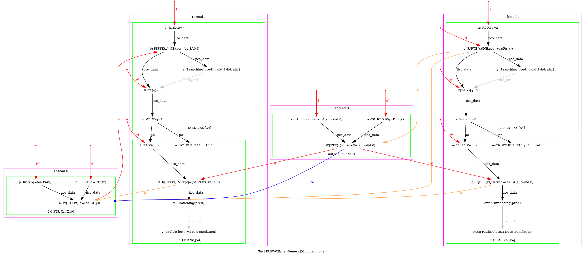
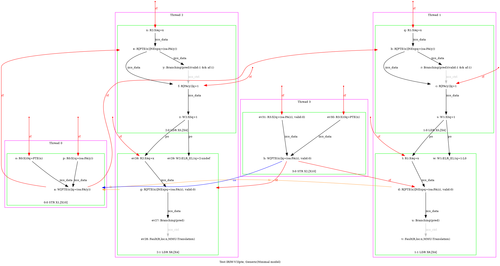
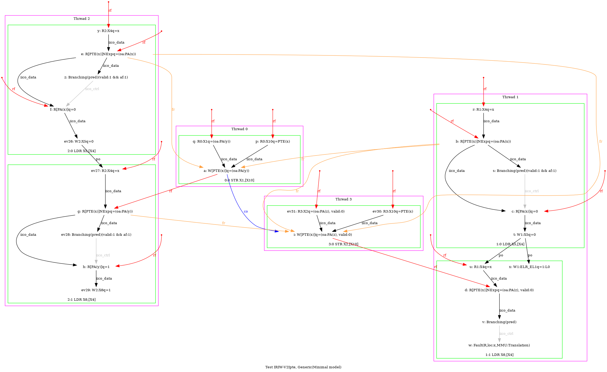
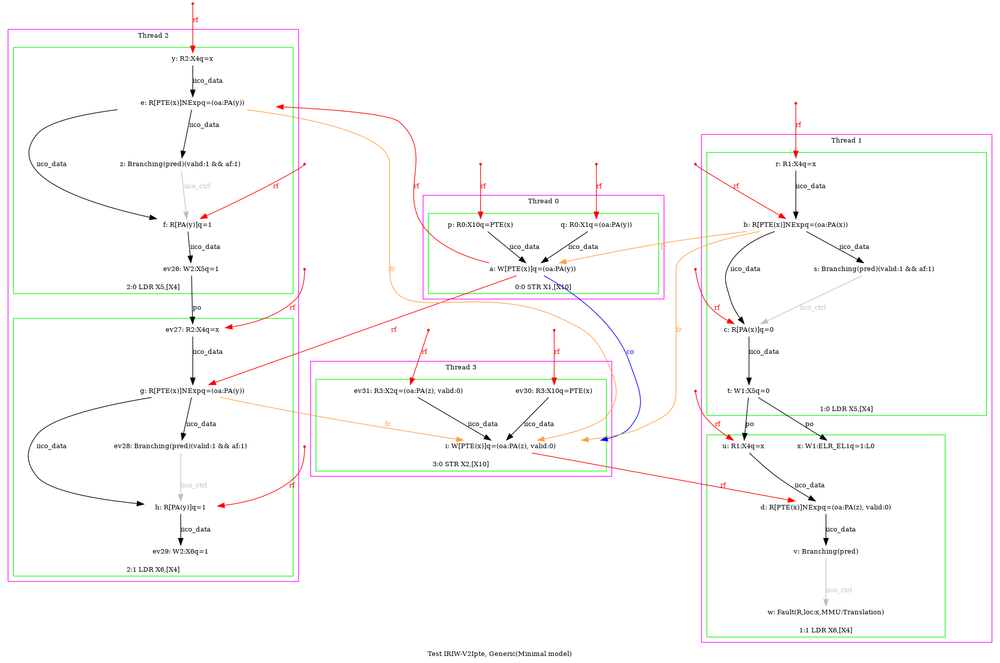

   …
AArch64 IRIW-V2Ipte
{
0:X10=pte_x; 3:X10=pte_x;
0:X1=(oa:phy_y,valid:1);
3:X2=(oa:phy_z,valid:0);
1:X4=x; 2:X4=x;
y=1; z=2;
}
P0 | P1 | P2 | P3 ;
STR X1,[X10] | LDR X5,[X4] | L1: LDR X5,[X4] | STR X2,[X10];
| L0: LDR X6,[X4] | LDR X6,[X4] | ;
exists (1:X5=0 /\ 2:X6=0 /\ [PTE(x)]=(oa:PA(y)) /\ fault(P1:L0,x,MMU:Translation) /\ fault(P2:L1,x,MMU:Translation)) \/ (1:X5=0 /\ 2:X6=0 /\ [PTE(x)]=(oa:PA(z), valid:0) /\ fault(P1:L0,x,MMU:Translation) /\ fault(P2:L1,x,MMU:Translation)) \/ (1:X5=0 /\ 2:X6=1 /\ [PTE(x)]=(oa:PA(z), valid:0) /\ fault(P1:L0,x,MMU:Translation) /\ ~fault(P2:L1,x)) \/ (1:X5=1 /\ 2:X6=0 /\ [PTE(x)]=(oa:PA(y)) /\ fault(P1:L0,x,MMU:Translation) /\ ~fault(P2:L1,x)) \/ (1:X5=1 /\ 2:X6=0 /\ [PTE(x)]=(oa:PA(y)) /\ fault(P1:L0,x,MMU:Translation) /\ fault(P2:L1,x,MMU:Translation)) \/ (1:X5=1 /\ 2:X6=0 /\ [PTE(x)]=(oa:PA(z), valid:0) /\ fault(P1:L0,x,MMU:Translation) /\ fault(P2:L1,x,MMU:Translation)) \/ (1:X5=1 /\ 2:X6=1 /\ [PTE(x)]=(oa:PA(y)) /\ fault(P1:L0,x,MMU:Translation) /\ ~fault(P2:L1,x)) \/ (1:X5=1 /\ 2:X6=1 /\ [PTE(x)]=(oa:PA(z), valid:0) /\ fault(P1:L0,x,MMU:Translation) /\ ~fault(P2:L1,x))